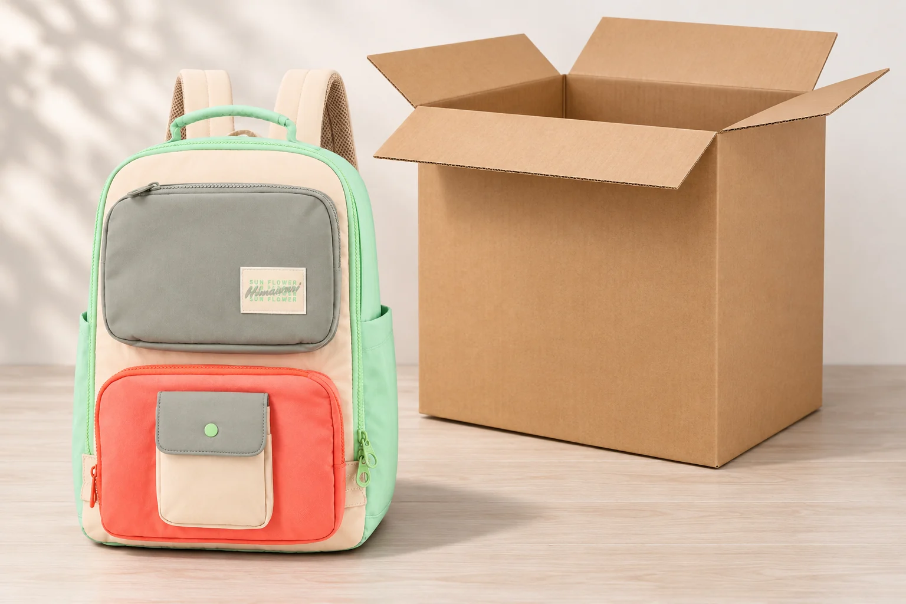
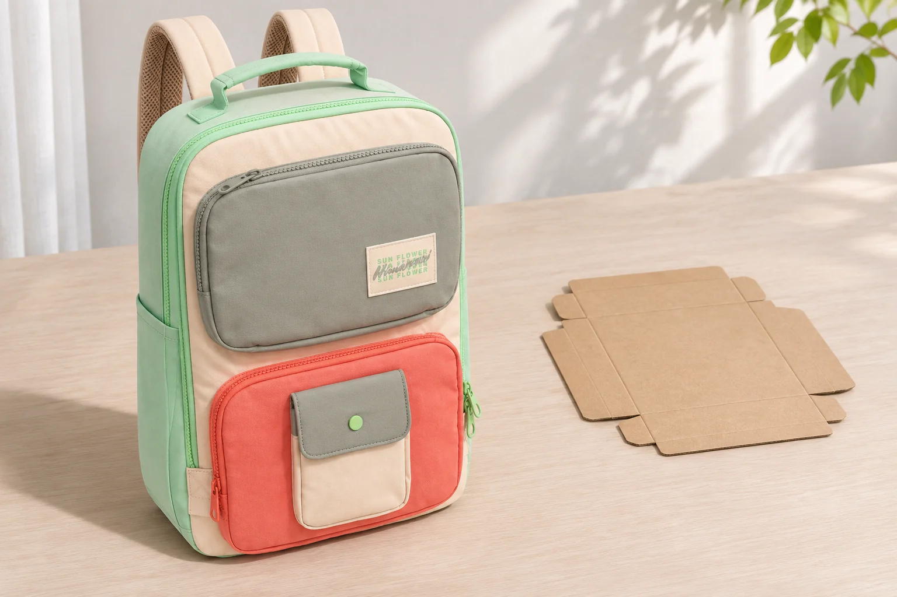
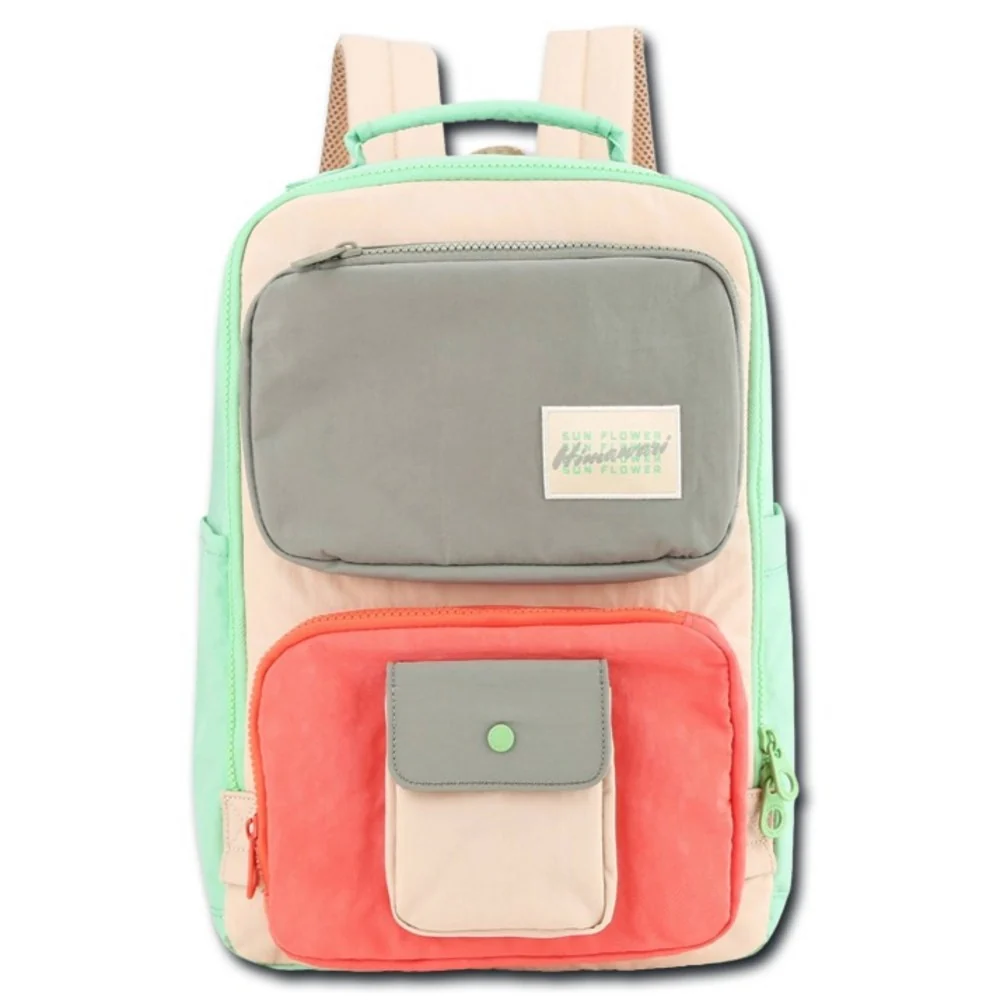

백팩 크기와 포장 상자 크기, 같은 숫자로 읽어도 될까

백팩을 사려고 크기표를 찾았는데 상품 정보에 적힌 세 숫자와 배송 관련 화면의 세 숫자가 다릅니다. 어느 쪽을 믿어야 할까요. 두 표가 가리키는 대상부터 읽으면 바로잡을 수 있습니다. 가방을 설명하는 치수인지, 가방을 담아 보내는 포장 단위의 치수인지에 따라 비교할 물건이 달라집니다. 숫자가 모두 cm로 적혀 있어도 같은 표로 합치기는 어렵습니다.
No.8029 민트아이보리의 확인된 외부 크기는 가로 27 × 세로 39 × 폭 14cm입니다. 제조사 카탈로그의 가방 기준 표기이며 실제 배송 상자 치수는 이 글에서 확인하지 않았습니다. 사진에 보이는 상자는 크기 항목의 대상을 구별하려고 배치한 별도 소품입니다. 해당 상품이 그 상자에 담겨 배송된다는 뜻으로 보지 않습니다.
가방을 고르는 표에는 대상 이름을 붙입니다
매장에서 제품을 비교할 때는 모델과 색상 다음에 가방 외부 크기라는 이름을 적어 둡니다. 같은 페이지에서 포장 크기라는 항목을 발견했다면 한 줄을 더 만듭니다. 값이 비슷해 보여도 기존 숫자를 새 숫자로 고쳐 쓰지는 않습니다. 어느 쪽이 맞고 틀린지 정하기 전에 각각 무엇을 잰 것인지 확인할 자리를 남깁니다.
No.8029의 정면에는 회색 위쪽 포켓과 코랄색 아래쪽 포켓이 보입니다. 아래 포켓 위에는 회색 덮개가 있는 작은 아이보리 포켓도 놓여 있습니다. 몸판 앞에 여러 면이 겹치는 모습 때문에 정면 사진만으로 앞뒤 폭을 가늠하기 어렵습니다. 공개된 14cm는 가방의 외부 폭입니다. 이 값으로 각 포켓의 안쪽 깊이까지 알 수는 없습니다. 상자의 폭을 추가로 알게 되더라도 포켓 치수의 빈칸은 그대로 남습니다.
세 숫자의 순서도 함께 기록합니다. 가로와 세로의 위치가 바뀐 표를 그대로 복사하면 가방을 세운 방향부터 달라집니다. No.8029의 가로 27cm와 세로 39cm를 적어 두었다면 다른 판매 화면에서도 같은 순서인지 읽습니다. 순서를 확인하지 못한 값에는 방향 미확인이라고 남겨두고 한쪽 기준에 억지로 맞추지 않는 편이 낫습니다.
손잡이가 위로 올라온 정면 사진도 볼 수 있습니다. 다만 공개 치수의 높이가 손잡이 끝까지 포함하는지에 관한 별도 측정 설명은 이 자료에서 확인하지 못했습니다. 포장 상자의 높이를 이용해 그 범위를 추정하지 않습니다. 손잡이까지의 높이가 꼭 필요한 보관 자리라면 가방의 어느 지점부터 어느 지점까지 잰 값을 원하는지 문의해야 합니다.

배송 화면의 숫자는 착용 크기로 옮기지 않습니다
포장 단위에는 가방 외에 보호재나 별도 구성품이 포함될 수 있습니다. 실제 포함 여부와 배치는 상품별 배송 안내에서 확인할 일입니다. 상자 한 변이 가방 표기보다 크다는 이유로 몸판도 그만큼 크다고 읽거나, 포장 두께가 얇다는 이유로 백팩이 접이식이라고 해석하지 않습니다. 가방의 사용 형태에서 운송할 때의 모습까지 어떤 과정을 거쳤는지 확인되지 않았기 때문입니다.
특히 펼친 상자와 세운 백팩을 함께 보면 두께를 혼동하기 쉽습니다. 종이 상자가 납작하게 놓였다는 사실은 그 상자를 접은 상태를 설명합니다. 옆의 가방도 같은 폭으로 눌러 보관할 수 있다는 근거는 되지 않습니다. No.8029의 손잡이와 앞 포켓이 만들어내는 외곽을 그대로 두고, 가방이 차지하는 자리와 포장재가 차지하는 자리를 각각 보는 편이 비교 목적에 맞습니다.
화면에 표시된 배송 중량도 마찬가지입니다. 설명을 읽고 그 숫자가 포장을 포함한 값인지, 운송 요금을 계산하는 기준인지 확인해야 합니다. 이 글에서 No.8029의 실제 포장 중량이나 배송 요금 산정값은 확인하지 않았습니다. 빈 가방 무게와 다른 항목을 같은 칸에 넣으면 메고 다닐 무게를 비교하려던 표가 달라질 수 있습니다. 숫자 옆의 대상 이름을 남기는 이유입니다.

내 목적에 필요한 치수로 돌아옵니다
책가방을 놓을 선반을 고른다면 가방의 바깥 모양과 선반 안쪽 공간을 대조합니다. 앞 포켓이 선반 문 쪽을 향하는지, 위 손잡이와 끈을 어디에 둘지도 그 자리에서 봅니다. 이때 배송 상자 크기는 가방을 꺼낸 뒤의 사용 공간을 대신 설명하지 못합니다. 상자를 함께 보관하려는 계획이라면 상자 자체의 치수도 따로 필요하다고 적으면 됩니다.
보낼 상자를 구하려는 경우에는 정돈한 가방과 실제 포장 조건이 기준이 됩니다. 제품 외부 크기의 세 변을 상자의 안쪽 치수로 그대로 주문하는 방식은 피합니다. 손잡이와 포켓, 끈이 놓일 위치와 필요한 보호 포장의 자리가 남는지 별도 확인해야 합니다. 이 글의 27 × 39 × 14cm는 특정 배송 상자의 추천 규격이나 포장 여유를 계산한 결과가 아닙니다.
판매자에게 질문을 남길 때도 목적을 붙이면 답의 대상을 맞추기 쉽습니다. 선반에 넣을 가방의 손잡이 포함 높이가 필요한지, 받게 될 상자의 외부 크기가 필요한지 구분합니다. 같은 No.8029라도 묻는 대상이 다르면 필요한 사진과 측정 위치가 달라집니다. 답을 받은 뒤에는 그 값이 가방 항목인지 포장 항목인지 읽고 원래 기록 옆에 더합니다.
구매 후보표에 모든 숫자를 채울 필요는 없습니다. 외부 크기는 확인, 포장 크기는 미확인, 포켓 내부 치수는 미확인처럼 두어도 비교는 가능합니다. 내가 확인하려던 것은 가방을 메고 쓰는 크기인지, 배송받고 보관할 상자의 크기인지 마지막으로 읽어 보세요. 대상이 맞는 숫자만 남기면 다른 표를 만날 때마다 가방 크기가 바뀌는 혼란을 줄일 수 있습니다.